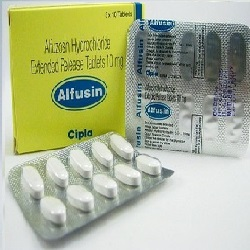

Alfuzosin ( Uroxatral )

Alfuzosinဆိုတာ ဘာလဲ
- Alfuzosin ဆိုတာ ကိုယ်တွင်းရှိ Alpha receptor အားပိတ်ခြင်းဖြင့် ဆီးကျိတ်နှင့် ဆီးအိမ်ဝရှိ ကြွက်သားများအား ဖြေလျော့စေကာ ဆီးသွားရ လွယ်ကူအောင် ဆောင်ရွက်ပေးသောဆေး ဖြစ်ပါသည်။
ဆေးကိုဘယ်နေရာတွေမှာသုံးလဲ
- Alfuzosin ကိုအဓိကအားဖြင့် ဆီးကျိတ်ကြီးသော လူနာများတွင် ဆီးသွားရခက်ခြင်း ဝေဒနာကိုသက်သာစေရန်သုံးပါတယ်။
- အခြားသော Alpha blocker များကဲ့သို့ သွေးပေါင်ချသည့်နေရာတွင် မသုံးပါ။
ဆေးရဲ့ ဆိုးကျိုး ဘာတွေရှိလဲ
- ခေါင်းမူးခြင်းနှင့် ချာချာလည်အောင်မူးခြင်းတို့ ဖြစ်တတ်ပါသည်။
- ဆေးမတည့်ခြင်း ဖြစ်နိုင်သော်လည်း ရှားပါသည်။
- ပြင်းထန်သော ဆိုးကျိုးများအဖြစ် သတိလစ်ခြင်း၊ နှလုံးခုန်မြန်/နှေးခြင်းနှင့် ရင်ဘတ်အောင့်ခြင်းများ ဖြစ်နိုင်ပါသည်။ အဆိုပါ ပြင်းထန်သော ဆိုးကျိုးလက္ခဏာများဖြစ်ပါက နီးစပ်ရာ ဆေးခန်းသို့အမြန်ပြပါ။ ထို့အပြင် အမျိုးသားများတွင် ကြုံတောင့် ကြုံခဲလိင်အင်္ဂါတောင့်တင်းမှုနှင့် လိင်အင်္ဂါ နာကျင်တောင့်တင်းမှုများ ၄ နာရီနှင့်အထက် ကြာသည်အထိကြုံရနိုင်ပါတယ်။ ထိုသို့ဖြစ်ပါက ဆေးရပ်ပြီး ဆရာဝန်နှင့် တိုင်ပင်ကုသသင့်ပါတယ်။/li>
ဆေးသောက်လျှင်ဘာတွေသတိထားရမလဲ?
- ဆေးမတည့်ခြင်း၊ အသည်းရောဂါ၊ ကျောက်ကပ်ရောဂါ၊ နှလုံးရောဂါ၊ သွေးပေါင်ကျခြင်း၊ မျက်စိရောဂါ(အတွင်းတိမ်၊ရေတိမ်)ရှိ/မရှိ ဆရာဝန်ကို ကြိုပြောသင့်ပါသည်။
- Alfuzosin သည် နှလုံးခုန်နှုန်းကို ပြောင်းလဲစေသော အခြေအနေတစ်ရပ် (ECG တွင် QT ရှည်ခြင်း) ကိုဖြစ်စေတတ်ပါသည်။ အဆိုပါအခြေအနေသည် ဆီးဆေးများသုံးထားခြင်း၊ နှလုံးရောဂါ အခံရှိခြင်းစသော လူနာများတွင်ပိုဆိုးစေသောကြောင့် ဆရာဝန်အား ကြိုပြောထားသင့်ပါတယ်။
- ခွဲစိတ်မှုတစ်ခုခု ပြုလုပ်ဖို့ရှိလျှင် ဆရာဝန်/သွားဆရာဝန်တွေကို ဆေးသောက်နေတာ ကြိုပြောဖို့ မမေ့ပါနှင့်။
- ကိုယ်ဝန်ဆောင်သည်များနှင့် နို့တိုက်မိခင်များသည် ဆရာဝန်နှင့်တိုင်ပင်ပြီးမှ သောက်သုံးသင့်ပါတယ်။
ဆေးအာနိသင်ဘယ်လိုရှိလဲ
- အခြားသော alpha blocker ဆေးများနှင့်တွဲသောက်လျှင် အာနိသင် ပြောင်းလဲမှုဖြစ်နိုင်ပါတယ်။
- ထို့အပြင် လိင်အင်္ဂါတောင့်တင်းမှုအားနည်းသောလူနာများနှင့် အဆုတ်သွေးတိုး ရောဂါသည်များတွင် ပေးသောဆေးများ (ဥပမာ sildenafil, tadalafi) တို့နှင့်တွဲသောက်ပါက သွေးပေါင်ချိန် လွန်စွာကျကာ မူးခြင်း၊သတိလစ်ခြင်းတို့ ဖြစ်နိုင်သဖြင့် ဆရာဝန်နှင့်ဦးစွာတိုင်ပင်ပြီးမှ ချိန်ညှိသောက်သုံးသင့်ပါသည်။
- Itraconazole, ketoconazole, boceprevir, cobicistat, clarithromycin, nefazodone, lopinavir, ritonavir, ribociclib, telaprevir, telithromycin အစရှိသောဆေးများသည် Alfuzosin အား ခန္တာကိုယ်မှ စွန့်ထုတ်ခြင်းကို ဟန့်တားသဖြင့် တွဲမသောက်သင့်ပါ။
ဆေးသောက်လွန်လျှင်ဘာဖြစ်နိုင်လဲ
- ခေါင်းအလွန်မူးခြင်း၊ သတိလစ်ခြင်းတို့ဖြစ်နိုင်ကာ အမြန်ဆုံးဆေးကုသ မှုခံယူသင့်ပါသည်။
Source– ဒေါက်တာအိမ့်ချယ်ရီ